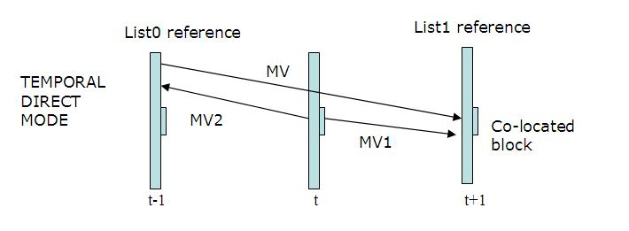

Inter frame
| This is the current revision of this page, as edited by 223.223.143.211 (talk) at 12:29, 6 December 2017 (→Typical Group Of Pictures (GOP) structure). The present address (URL) is a permanent link to this version. |
This article includes a list of references, related reading or external links, but its sources remain unclear because it lacks inline citations. (February 2013) (Learn how and when to remove this template message) |
An inter frame is a frame in a video compression stream which is expressed in terms of one or more neighboring frames. The "inter" part of the term refers to the use of Inter frame prediction. This kind of prediction tries to take advantage from temporal redundancy between neighboring frames enabling higher compression rates.
Contents
Inter frame prediction[edit]
An inter coded frame is divided into blocks known as macroblocks. After that, instead of directly encoding the raw pixel values for each block, the encoder will try to find a block similar to the one it is encoding on a previously encoded frame, referred to as a reference frame. This process is done by a block matching algorithm. If the encoder succeeds on its search, the block could be encoded by a vector, known as motion vector, which points to the position of the matching block at the reference frame. The process of motion vector determination is called motion estimation.
In most cases the encoder will succeed, but the block found is likely not an exact match to the block it is encoding. This is why the encoder will compute the differences between them. Those residual values are known as the prediction error and need to be transformed and sent to the decoder.
To sum up, if the encoder succeeds in finding a matching block on a reference frame, it will obtain a motion vector pointing to the matched block and a prediction error. Using both elements, the decoder will be able to recover the raw pixels of the block. The following image shows the whole process graphically:
{kind=link}
This kind of prediction has some pros and cons:
- If everything goes fine, the algorithm will be able to find a matching block with little prediction error so that, once transformed, the overall size of motion vector plus prediction error is lower than the size of a raw encoding.
- If the block matching algorithm fails to find a suitable match the prediction error will be considerable. Thus the overall size of motion vector plus prediction error will be greater than the raw encoding. In this case the encoder would make an exception and send a raw encoding for that specific block.
- If the matched block at the reference frame has also been encoded using Inter frame prediction, the errors made for its encoding will be propagated to the next block. If every frame was encoded using this technique, there would be no way for a decoder to synchronize to a video stream because it would be impossible to obtain the reference images.
Because of these drawbacks, a reliable and time periodic reference frame must be used for this technique to be efficient and useful. That reference frame is known as Intra-frame, which is strictly intra coded, so it can always be decoded without additional information.
In most designs, there are two types of inter frames: P-frames and B-frames. These two kinds of frames and the I-frames (Intra-coded pictures) usually join in a GOP (Group Of Pictures). The I-frame doesn't need additional information to be decoded and it can be used as a reliable reference. This structure also allows to achieve an I-frame periodicity, which is needed for decoder synchronization.
Frame types[edit]
The difference between P-frames and B-frames is the reference frame they are allowed to use.
P-frame[edit]
P-frame is the term used to define the forward Predicted pictures. The prediction is made from an earlier picture, mainly an I-frame, so that require less coding data (≈50% when compared to I-frame size).
The amount of data needed for doing this prediction consist of motion vectors and transform coefficients describing prediction correction. It involves the use of motion compensation.
B-frame[edit]
B-frame is the term for bidirectionally predicted pictures. This kind of prediction method occupies less coding data than P-frames (≈25% when compared to I-frame size) because they can be predicted or interpolated from an earlier and/or later frame. Similar to P-frames, B-frames are expressed as motion vectors and transform coefficients. In order to avoid a growing propagation error, B-frames are not used as a reference to make further predictions in most encoding standards. However, in newer encoding methods (such as AVC), B-frames may be used as reference.
Typical Group Of Pictures (GOP) structure[edit]
{kind=link}
The typical Group Of Pictures (GOP) structure is IBBPBBP... The I-frame is used to predict the first P-frame and these two frames are also used to predict the first and the second B-frames. The second P-frame is predicted also using the first I-frame. Both P-frames join together to predict the third and fourth B-frames. The scheme is shown in the next picture:
This structure suggests a problem because the fourth frame (a P-frame) is needed in order to predict the second and the third (B-frames). So we need to transmit the P-frame before the B-frames and it will delay the transmission (it will be necessary to keep the P-frame). This structure has strong points:
- It minimizes the problem of possible uncovered areas.
- P-frames and B-frames need less data than I-frames, so less data is transmitted.
But it has weak points:
- It increases the complexity of the decoder, which can mean more memory is needed to rearrange the frames.
- The interpolated frames (namely B-frames) require more motion vectors which means an increased bit rate.
H.264 Inter frame prediction improvements[edit]
The most important improvements of this technique in regard to previous H.264 standard are:
- More flexible block partition
- Resolution of up to ¼ pixel motion compensation
- Multiple references
- Enhanced Direct/Skip Macroblock
More flexible block partition[edit]
Luminance block partition of 16×16 (MPEG-2), 16×8, 8×16, and 8×8. The last case allows the division of the block into new blocks of 4×8, 8×4, or 4×4.
{kind=link}
The frame to be coded is divided into blocks of equal size as shown in the picture above. Each block prediction will be blocks of the same size as the reference pictures, offset by a small displacement.
Resolution of up to ¼ pixel motion compensation[edit]
Pixels at half-pixel position are obtained by applying a filter of length 6.
H=[1 -5 20 20 -5 1]
For example:
b=A - 5B + 20C + 20D - 5E + F
Pixels at quarter-pixel position are obtained by bilinear interpolation.
While MPEG-2 allowed a ½ pixel resolution, Inter frame allows up to ¼ pixel resolution. That means that it is possible to search a block in the frame to be coded in other reference frames, or we can interpolate nonexistent pixels to find blocks that are even better suited to the current block. If motion vector is an integer number of units of samples, that means it is possible to find in reference pictures the compensated block in motion. If motion vector is not an integer, the prediction will be obtained from interpolated pixels by an interpolator filter to horizontal and vertical directions.
{kind=link}
Multiple references[edit]
Multiple references to motion estimation allows finding the best reference in 2 possible buffers (List 0 to past pictures, List 1 to future pictures) which contain up to 16 frames each. Block prediction is done by a weighted sum of blocks from the reference picture. It allows enhanced picture quality in scenes where there are changes of plane, zoom, or when new objects are revealed.
{kind=link}
Enhanced Direct/Skip Macroblock[edit]
Skip and Direct Mode are very frequently used, especially with B-frames. They significantly reduce the number of bits to be coded. These modes are referred to when a block is coded without sending residual error or motion vectors. The encoder will only record that it is a Skip Macroblock. The decoder will deduce the motion vector of Direct/Skip Mode coded block from other blocks already decoded.
There are two ways to deduce the motion: 
{kind=link}
- Temporal
- It uses the block motion vector from List 1 frame, located at the same position to deduce the motion vector. List 1 block uses a List 0 block as reference.
- Spatial
- It predicts the movement from neighbour macroblocks in same frame. A possible criterion could be to copy the motion vector from a neighboring block. These modes are used in uniform zones of the picture where there is not much movement.
{kind=link}
In the figure above, pink blocks are Direct/Skip Mode coded blocks. As we can see, they are used very frequently, mainly in B-frames.
Additional information[edit]
Although the use of the term "frame" is common in informal usage, in many cases (such as in international standards for video coding by MPEG and VCEG) a more general concept is applied by using the word "picture" rather than "frame", where a picture can either be a complete frame or a single interlaced field.
Video codecs such as MPEG-2, H.264 or Ogg Theora reduce the amount of data in a stream by following key frames with one or more inter frames. These frames can typically be encoded using a lower bit rate than is needed for key frames because much of the image is ordinarily similar, so only the changing parts need to be coded.
References[edit]
- Software H.264: http://iphome.hhi.de/suehring/tml/download/
- T.Wiegand, G.J. Sullivan, G. Bjøntegaard, A.Luthra: Overview of the H.264/AVC Video Coding Standard. IEEE Transactions on Circuits and Systems for Video Technology, Vol. 13, No. 7, July 2003